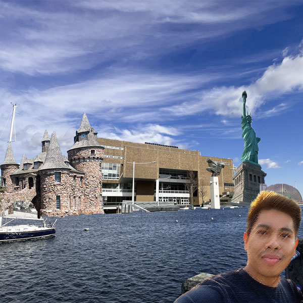

|
My name is Kyaw Htaik.I was born and raised in Burma, also called as Myanmar. I have been in the United States for about 4 years. Having a full-time job, I am studying at BMCC as a part-time student majoring in Computer Information Systems. I like travelling and seeing pastoral scenary.Watching movies is also one of my hobbies. Currently I live in Brooklyn with my wife. |
 |